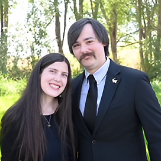
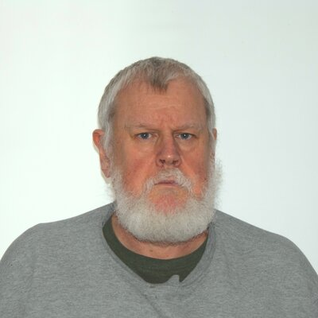
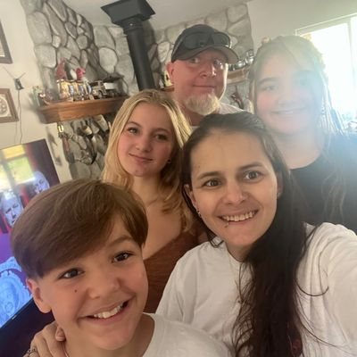

River Tech School of Performing Arts & Technology
Christian education for artistic and tech-savvy students, grades 1–12, in Post Falls, Idaho.
Who We Are
River Tech is a school of performing arts and technology in Post Falls, Idaho. Our teachers, curriculum, and competency-based learning model create a place where students actually want to show up every day.
With class sizes around 15 students (roughly half that of public schools), our teachers spend real time with each child. Grounded in Christian values and a family-centered culture, our curriculum blends relationships, finances, and health with hands-on technology and performing arts.
Programs
River Tech School (Full-Time)
Four to five days of integrated learning in performing arts, technology, and core academics. Small classes. Competency-based progression. Christian values at the center.
River Tech À La Carte (Home School)
Choose 1 to 4 days per week of River Tech classes to enrich your homeschool. Performing arts, science, social studies, life skills, and technology, all in a community of learners.
Tours
We are accepting applications for September 1st, 2026.
Come tour our school. Meet the teachers, see the classrooms, and get all your questions answered in person.
Wednesdays at 3 PM
Where: River Tech School of Performing Arts & Technology
927 E Polston Ave, Post Falls, ID 83854.
Next Start: Apply today to start September 1st, 2026.
Email: learn@rivertech.me
Idaho Parental Choice Tax Credit
Idaho's Parental Choice Tax Credit offers up to $5,000 per child (or $7,500 for special needs students) toward private school tuition. River Tech qualifies. Learn more about the tax credit.
Our students learn coding, robotics, 3D modeling, and videography. Every student builds a strong tech foundation, whether or not they plan a career in technology.
Tech Director Jordan Ezell holds a B.S. in Game Development from Full Sail University. He teaches students to build real things: games, robots, animations, and films. See the full technology curriculum.
Every student learns drums, bass, ukulele, guitar, keyboard, and vocals. Add in acting, dance, choir, and band, and you get a full performing arts education. We produce musicals, concerts, and studio recordings throughout the year.
Music Director Dan Hegelund is a professional vocal coach and choir director with thirty years of experience. He heads the River Tech Arts department. See our performances and music program.
Students learn sportsmanship, mobility, and mental toughness through athletics and fitness training. Physical fitness is part of our holistic approach to education: "your body is a temple of the Holy Spirit" (1 Cor 6:19-20).
Athletics Director Jerome Long played in the NFL with the Kansas City Chiefs, Jacksonville Jaguars, and Dallas Cowboys. He's also a certified math teacher with a B.A. in Mathematics. At River Tech, Jerome leads our math and sports programs. Learn more about Sports & Fitness.
River Tech provides stability. Christian, family-centered, and leadership-building. Your child will discover purpose and meaning here.
Our teachers bring joy, clarity, and hopefulness to everything they do. Our curriculum builds competency, confidence in God, and confidence in self, so our students can face the future ready. Read more about why families choose River Tech.
Our School Had a Fire. We're Already Back.
On March 15th, a fire destroyed our classrooms at The River Church. Within two weeks, we resumed classes at our new home: The Heart Church, 927 E Polston Ave, Post Falls. River Tech is fully back and accepting students.
We gratefully accept donations via Zeffy, checks, or any items from the list below:
- Musical Instruments — keyboards, guitars, ukuleles, drums
- Technology — laptops, tablets, robotics kits, 3D printers
- Audio & Film Equipment — speakers, microphones, cameras
- Gym — PE equipment
Donate online: zeffy.com/river-tech-post-fire-recovery
Mail a check to: River Tech School, 1517 E. 1st Ave, Post Falls, ID 83854.
At River Tech, students progress at their own pace based on mastery, not seat time. If a student excels in math, they move ahead. If they need more time in reading, they get it. No artificial grade-level ceilings. No one left behind.
What Families Say
Dan & Mary Hegelund

Dan Hegelund, principal and founder of River Tech, holds a B.S. and M.S. in Political Science. He is a professional vocal coach and choir director with thirty years of experience in music education. Dan heads the Arts department, producing concerts, musicals, studio recordings, and more.
Mary Hegelund holds a B.S. and M.S. in Education and leads River Tech Elementary. She has taught at preschool, kindergarten, and elementary levels, and homeschooled three children of her own. Mary teaches team building, teamwork, and leadership.
Jerome Long
Jerome is a certified math teacher with a B.A. in Mathematics and over five years of classroom experience as well as homeschooling his 3 older children. He served as a Public Safety Officer, completing rigorous police, fire, and EMT training. He also played in the NFL with the Kansas City Chiefs, Jacksonville Jaguars, and Dallas Cowboys. At River Tech, Jerome leads our math and sports programs, mentoring students in mind, body, and character.
Caitlin Relvas

Caitlin Relvas holds a B.A. in English and Classical Civilizations with a minor in Dance. She has studied and taught dance for most of her life. Caitlin teaches K-1 students problem-solving and responsibility, and guides middle and high school students in writing and literature.
Jordan Ezell

Jordan Ezell holds a B.S. in Game Development from Full Sail University and a degree in Biblical Counseling from Master's Commission. A board game and video game designer himself, Jordan heads the Tech Department. Students learn programming, robotics, 3D animation, videography, sound engineering, and game development.
Luke Hegelund
Luke Hegelund is the media director at River Tech with four years of teaching experience. He is a multi-instrumentalist who has offered private piano, guitar, and drum lessons. Luke is also a professional videographer who has produced wedding films, short films, and commercials. He is finishing his degree in Theology while pursuing a degree in Education. Students learn filmmaking, music, and 3D design from Luke.
Guest Teachers
River Tech regularly invites guest speakers for master workshops: entrepreneurs on starting a business, professional musicians on the music industry, missionaries on compassion and service around the world.
Phil Munts

Phil Munts holds a Master's in Electrical Engineering and brings over four decades of engineering experience to River Tech's Friday robotics program. He has ten international patents to his name, including work on NASA ground station software and embedded systems deployed across Europe. Phil has taught Python and robotics at the international school level. At River Tech, his hands-on approach gets students writing real code that controls real hardware.
Cris Maness

Cris Maness holds a B.A. in Psychology from Interamerican University in Puerto Rico. A retired Army veteran who served in the U.S. and abroad, she settled in Coeur d'Alene after her service. Cris homeschools her three children and has taught at co-ops. A native Spanish speaker, she brings her language and culture to River Tech as the school's Spanish teacher.
River Tech School: Where Creativity and Innovation Converge.
With small classes and strong student-teacher ratios, River Tech consistently receives outstanding reviews from parents and students. Private Christian education in Post Falls, built around a personalized learning experience for every child.